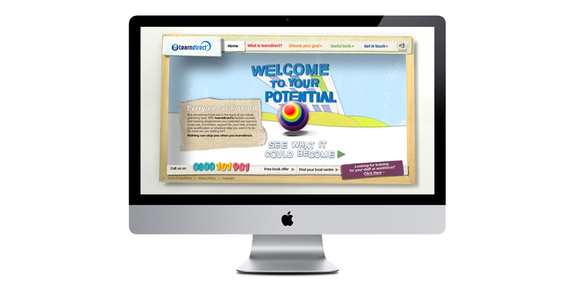

<div id="single-portfolio">
  <div id="portfolio-details" class="container"> <a class="close-folio-item" href="#"><i class="fa fa-times"></i></a> 
    <div class="row">
      <div class="col-sm-9">
        <div class="project-info">
          <h2>learndirect 'Nothing Can Stop You' campaign</h2>
          <p>Post 16 education providers <a href="http://www.learndirect.co.uk/" target="_blank">Ufi/learndirect</a>, developed a campaign to break down barriers to learning and to change perceptions around adult education.</p>
          <p><a href="http://www.collectivelondon.com/#home" target="_blank">London creative agency Collective,</a> were commissioned to produce a microsite, which provided an engaging, interactive platform to promote the campaign. Working with the web  services and marketing teams, I developed a series of animated and  static promotional campaign materials, used on internal and external  sites. I adopted the same illustrative, hand-made style from the  microsite creative to provide consistency across all media.</p>
          <p><a href="https://www.behance.net/gallery/540573/Learn-Direct-Nothing-can-stop-you" target="_blank">View production of the Nothing Can Stop You campaign on Behance »</a></p>
        </div>
      </div>
      <div class="col-sm-3">
        <div class="project-details">
          <h3>Project Details</h3>
          <p><span>Client: </span>learndirect</p>
          <p><span>Date: July</span> 2008</p>
          <p><span>Tag:</span> campaigns, interactions</p>
        </div>
      </div>
    </div>
  </div>
</div>
